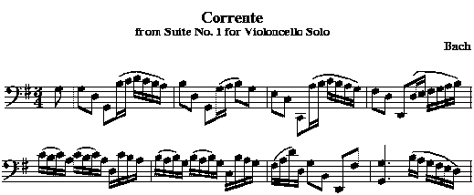
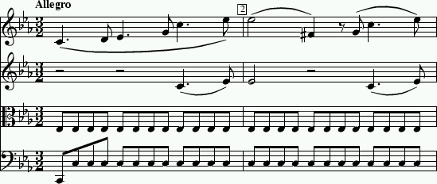

Using your preferred text editor, encode the following musical
passages using the Humdrum
**kern representation.
Include both beaming and stem directions in your answers.
How to submit an assignment.
DUE: Monday October 6th, 2008; 4:30 PM.